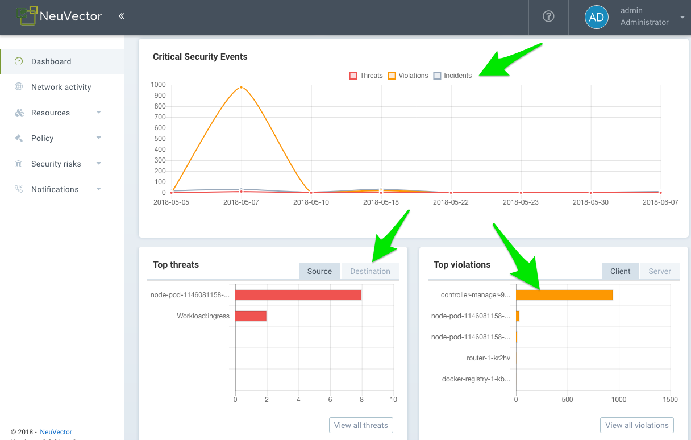
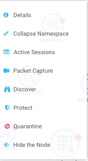
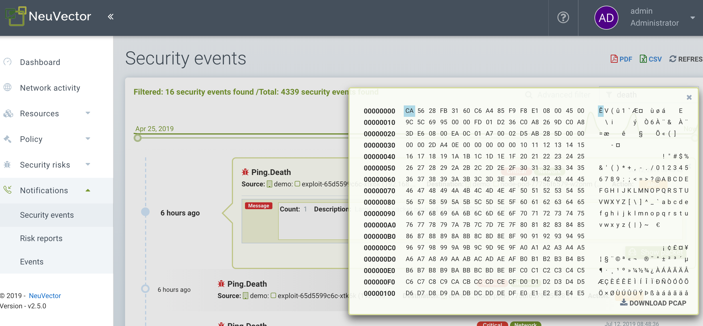

Navigieren in der Konsole
Zugriff auf die Konsole
Der Standardbenutzer und das Passwort sind admin.
Bitte sehen Sie sich den ersten Abschnitt „Basics → Connect to Manager“ an, um Konfigurationsoptionen wie das Abschalten von HTTPS, den Zugriff auf die Konsole über eine Unternehmensfirewall, die Port 8443 nicht zulässt, oder das Ersetzen des selbstsignierten Zertifikats zu erhalten.
Menüs und Navigation
Verwenden Sie das Menü auf der linken Seite, um in Ihrer SUSE® Security Konsole zu navigieren. Bitte beachten Sie, dass es oben rechts zusätzliche Einstellungen für das Benutzerprofil und die Multi-Cluster-Konfiguration gibt.

Dashboard
Das Dashboard zeigt eine Zusammenfassung der Risikobewertungen, Sicherheitsereignisse und Anwendungsprotokolle, die von SUSE® Security erkannt wurden. Es zeigt auch Details zu einigen dieser Sicherheitsereignisse an. PDF-Berichte können aus dem Dashboard generiert werden, die detaillierte Diagramme und Erklärungen enthalten.
Oben im Dashboard gibt es eine Zusammenfassung der Sicherheitsrisiken im Cluster. Das Schraubenschlüssel-Symbol neben der Gesamtrisikobewertung kann angeklickt werden, um einen Assistenten zu öffnen, der Sie durch empfohlene Schritte zur Reduzierung/Verbesserung der Risikobewertung führt. Wenn Sie mit der Maus über jede Risikoskala fahren, erhalten Sie rechts eine Beschreibung sowie Hinweise, wie Sie die Risikobewertung verbessern können. Siehe auch den separaten Dokumentationsabschnitt Verbesserung der Sicherheitsrisikobewertung.

-
Gesamte Sicherheitsrisikobewertung. Dies ist eine gewichtete Zusammenfassung der einzelnen Risikobereiche, die rechts zusammengefasst sind, einschließlich Serviceexposition, Ingress/Egress-Exposition und Risiken durch Schwachstellenausnutzung. Klicken Sie auf den Schraubenschlüssel, um die Punktzahl zu verbessern.
-
Serviceexpositionsrisikobewertung. Dies ist ein Indikator dafür, wie viele Dienste durch Whitelist-Regeln geschützt sind und im Monitor- oder Schutzmodus laufen, wo das Risiko am niedrigsten ist. Ein hohes Verhältnis von Diensten im Entdeckermodus bedeutet, dass diese Dienste nicht durch Whitelist-Regeln segmentiert oder isoliert sind.
-
Ingress/Egress-Risikobewertung. Dies ist eine gewichtete Zusammenfassung der tatsächlichen Bedrohungen oder Netzwerkverletzungen, die bei Ingress- oder Egress-Verbindungen (außerhalb des Clusters) erkannt wurden, kombiniert mit erlaubten Ingress/Egress-Verbindungen. Externe Verbindungen, die durch Whitelist-Regeln geschützt sind, haben ein geringeres Risiko, können jedoch weiterhin durch eingebettete Netzwerkangriffe angegriffen werden. Hinweis: Eine Liste der Ingress- und Egress-IPs kann im Abschnitt Ingress/Egress-Details als Exposure Report heruntergeladen werden.
-
Schwachstellenausnutzungsrisikobewertung. Dies ist das Risiko der Schwachstellenausnutzung in laufenden Containern. Dienste im Entdeckermodus mit hochkritischen Schwachstellen haben den größten Einfluss auf die Punktzahl, da sie das höchste Risiko darstellen. Wenn Dienste im Monitor- oder Schutzmodus sind, aber dennoch Schwachstellen mit hoher Kritikalität aufweisen, sind sie durch Netzwerk- und Prozessregeln geschützt, um verdächtige Aktivitäten zu identifizieren (und zu blockieren), sodass sie eine geringere Gewichtung auf die Punktzahl haben. Eine Warnung wird angezeigt, wenn die Auto-Scan-Schaltfläche nicht für automatisches Laufzeitscannen aktiviert ist.
Einige der Diagramme sind interaktiv, wie unten mit den grünen Pfeilen gezeigt.

Einige der im Dashboard angezeigten Ereignisdaten haben Einschränkungen, wie im Abschnitt Berichterstattung beschrieben.
Erkannte Anwendungsprotokolle Dieses Diagramm fasst die in Live-Verbindungen im Cluster erkannten Anwendungsprotokolle zusammen. Die Kategorie ‘Other’ bedeutet alle nicht erkannten HTTP-Protokolle oder rohe TCP-Verbindungen. Sie können zwischen den Anwendungsabdeckungs- und Anwendungsvolumenebenen umschalten.
-
Die Anwendungsabdeckung ist die Anzahl der einzigartigen Pod-zu-Pod-Gespräche, die zwischen Anwendungsdiensten erkannt werden. Wenn beispielsweise der Dienst-Pod A über HTTP mit dem Dienst-Pod B verbunden ist, ist das ein einzigartiges HTTP ‘conversation’, aber alle Verbindungen zwischen A und B zählen als ein Gespräch.
-
Das Anwendungsvolumen ist die Netzwerkaktivität, die in GByte für alle Dienste gemessen wird, die dieses Protokoll verwenden.
Netzwerkaktivität
Dies bietet eine grafische Karte Ihrer Container und der Gespräche zwischen den Containern. Es zeigt auch Verbindungen zu anderen lokalen und externen Ressourcen. In den Überwachungs- und Schutzmodi werden Verstöße mit roten oder gelben Linien angezeigt, um anzuzeigen, dass ein Verstoß erkannt wurde.
|
Wenn eine große Anzahl von Containern oder Diensten vorhanden ist, wird die Ansicht automatisch auf eine Namespace-Ansicht (eingeklappt) umgeschaltet. Doppelklicken Sie auf ein Namespace-Symbol, um es zu erweitern. |
|
Diese Anzeige verwendet eine lokale GPU, wenn verfügbar, um die Ladezeiten zu beschleunigen. Einige Windows-GPUs haben bekannte Probleme, und die Verwendung der GPU kann im Fenster "Erweiterter Filter" deaktiviert werden (siehe unten für Werkzeuge). |
Einige der möglichen Aktionen sind:
-
Funktion zum schnellen Auffinden spezifischer Objekte anhand ihres vollständigen oder genauen Namens. Sie können zu Richtlinie > Gruppen gehen, um Folgendes zu finden:
-
Pods oder Container
-
Knoten
-
Gruppen
-
-
Objekte verschieben, um Dienste und Gespräche besser zu sehen
-
Klicken Sie auf eine beliebige Linie (Pfeil), um weitere Details wie Protokoll/Port, neuesten Zeitstempel und zum Hinzufügen oder Bearbeiten einer Regel anzuzeigen (HINWEIS: Beide Verbindungspunkte müssen vollständig erweitert sein, indem Sie auf jeden doppelklicken, um die Verbindungsdetails zu sehen)
-
Klicken Sie auf einen beliebigen Container, um Details und die ‘i’ für Echtzeitverbindungen zu sehen. Sie können von hier aus auch einen Knoten isolieren. Klicken Sie mit der rechten Maustaste auf einen Container, um Aktionen auszuführen.
-
Filteransicht nach Protokoll oder Suche nach Namespace, Gruppe, Container (oben rechts). Sie können mehrere Filter zur Auswahlbox hinzufügen.
-
Aktualisieren Sie die Karte, um die neuesten Gespräche anzuzeigen.
-
Vergrößern/Verkleinern, um zwischen einer logischen Ansicht (alle Container in einer Dienstgruppe zusammengeklappt) oder einer physischen Ansicht (alle Container für denselben Dienst angezeigt) zu wechseln.
-
Schalten Sie die Anzeige von Orchestrierungskomponenten wie Lastenausgleichern (z. B. integriert für Kubernetes oder Swarm) um.
-
(Service Mesh-Symbol) Doppelklicken Sie, um einen Pod in einem Service Mesh wie Istio/Linkerd2 aufzuklappen, sodass die Sidecar- und Arbeitslastcontainer innerhalb des Pods angezeigt werden.
|
Gruppennamen in der Netzwerkaktivitätsansicht sind zur besseren Lesbarkeit verkürzt. Verkürzte Namen sind nicht durchsuchbar. Um eine Gruppe zu finden, verwenden Sie den vollständigen Namen, der unter Richtlinie > Gruppen aufgeführt ist. Zum Beispiel:
* Angezeigt in der Netzwerkaktivität: Nur der vollständige Name, |
Das Menü "Werkzeuge" oben links hat diese Funktionen, von links nach rechts:
-
Vergrößern/Verkleinern
-
Suchfunktion
-
Setzen Sie die Symbolanzeigen zurück (wenn Sie sie verschoben haben)
-
Öffnen Sie das Fenster für erweiterte Filter (die Filter bleiben während der Benutzersitzung bestehen).
-
Legende anzeigen/ausblenden
-
Machen Sie einen Screenshot
-
Aktualisieren Sie die Anzeige der Netzwerkaktivität

Ein Rechtsklick auf einen Container zeigt die folgenden Aktionen an:

Hier können Sie aktive Sitzungen einsehen, Paketaufzeichnungen starten und Quarantäne durchführen. Hier können Sie auch den allgemeinen Schutzmodus für den Dienst (alle Container für diesen Dienst) ändern. Die Optionen zum Aufklappen/Zuklappen ermöglichen es Ihnen, die Objekte zu vereinfachen oder aufzuklappen.
Die Daten auf der Karte benötigen möglicherweise einige Sekunden nach Netzwerkaktivitäten, um angezeigt zu werden.
Siehe die Erklärung der Legenden-Symbole am Ende dieser Seite.
Ressourcen
Assets zeigt Informationen über Plattformen, Knoten, Container, Registrierungen, Sigstore-Überprüfer (die in Admission Control-Regeln verwendet werden) und Systemkomponenten (SUSE® Security Controller, Scanner und Durchsetzer) an.
SUSE® Security umfasst eine End-to-End-Schwachstellenmanagement-Plattform, die in Ihren automatisierten CI/CD-Prozess integriert werden kann. Scannen Sie Registrierungen, Bilder und laufende Container sowie Host-Knoten auf Schwachstellen. Ergebnisse für einzelne Registrierungen, Knoten und Container finden Sie hier, während kombinierte Ergebnisse und erweiterte Berichterstattung im Menü Sicherheitsrisiken zu finden sind.
SUSE® Security führt auch automatisch den Docker Bench-Sicherheitsbericht und den Kubernetes CIS-Benchmark (sofern zutreffend) auf jedem Host und bei laufenden Containern aus.
Beachten Sie, dass der Status aller Container in Assets → Container angezeigt wird, was den SUSE® Security Schutzmodus (Entdecken, Überwachen, Schützen) anzeigt. Wenn der Container im Status 'Exit' angezeigt wird, befindet er sich noch auf dem Host, ist jedoch gestoppt. Das Entfernen des Containers entfernt ihn aus dem "Exit"-Zustand.
Bitte sehen Sie sich den Abschnitt Scannen & Compliance für weitere Details an, einschließlich der Verwendung des Jenkins-Plugins SUSE® Security Schwachstellenscanners.
Richtlinie
Dies zeigt und verwaltet die Laufzeit-Sicherheitsrichtlinie, die festlegt, welches Verhalten im Bereich des Container-Netzwerks, der Prozesse und des Dateisystems (bzw. der Anwendungen) erlaubt und welches verweigert wird. Alle Gespräche und Aktivitäten, die nicht ausdrücklich erlaubt sind, werden von SUSE® Security als Verstöße protokolliert. Hier können auch Admission Control-Regeln erstellt werden.
Bitte sehen Sie sich den Abschnitt Sicherheitsrichtlinie in dieser Dokumentation an, um eine detaillierte Erklärung des Verhaltens der Regeln sowie Hinweise zur Bearbeitung oder Erstellung von Regeln zu erhalten.
Sicherheitsrisiken
Dies ermöglicht anpassbare Untersuchungen, Triage und Berichterstattung im Bereich Schwachstellen- und Compliance-Management. Untersuchen Sie ganz einfach Schwachstellen in Images und finden Sie heraus, welche Knoten oder Container diese Schwachstellen enthalten. Erweiterte Filtermöglichkeiten erleichtern die Überprüfung von Scan- und Compliance-Prüfergebnissen und bieten maßgeschneiderte Berichterstattung.
Diese Menüs kombinieren Ergebnisse aus der Registry (Image), von Knoten- und Container-Schwachstellenscans sowie von Compliance-Prüfungen, um ein durchgängiges Schwachstellenmanagement und Reporting zu ermöglichen.
Benachrichtigungen
Hier können Sie die Protokolle für Sicherheitsereignisse, Risikoberichte (z. B. Scanning) und allgemeine Ereignisse einsehen. SUSE® Security unterstützt auch SYSLOG zur Integration mit Tools wie SPLUNK sowie Webhook-Benachrichtigungen.
Sicherheitsereignisse
Verwenden Sie die Suche oder den erweiterten Filter, um spezifische Ereignisse zu finden. Das Zeitachsen-Widget oben kann ebenfalls mit den linken und rechten Kreisen angepasst werden, um das Zeitfenster zu ändern. Sie können auch ganz einfach Regeln (Sicherheitsrichtlinie) hinzufügen, um das erkannte Ereignis zuzulassen oder abzulehnen, indem Sie die Schaltfläche „Regel überprüfen“ auswählen und eine neue Regel bereitstellen.
SUSE® Security überwacht kontinuierlich alle Container auf bekannte Angriffe wie DNS, DDoS, HTTP-Smuggling, Tunneling usw. Wenn ein Angriff erkannt wird, wird er hier protokolliert und blockiert (wenn der Container/Dienst zum Schutz eingestellt ist), und das Paket wird automatisch erfasst. Sie können die Paketdetails einsehen, zum Beispiel:

Implizite Verweigerungsregel ist verletzt
Verstöße sind Verbindungen, die die Whitelist-Regeln verletzen oder einer Blacklist-Regel entsprechen. Detaillierte Verstöße werden erfasst und Quell-IP-Adressen können weiter untersucht werden.
Andere Sicherheitsereignisse umfassen Privilegieneskalationen, verdächtige Prozesse oder nicht ordnungsgemäße Aktivitäten im Dateisystem, die auf Containern oder Hosts festgestellt werden.
Risikoberichte
Registrierungs-Scans, Laufzeitscans und Ereignisse zur Zulassungskontrolle werden hier angezeigt. Außerdem werden die Ergebnisse der CIS-Benchmarks und Compliance-Prüfungen angezeigt.
Bitte sehen Sie den Abschnitt "Berichterstattung" für weitere Details und Einschränkungen der Ereignisanzeigen in der Konsole an.
Einstellungen
Einstellungen → Benutzer & Rollen
Fügen Sie hier weitere Benutzer hinzu. Benutzern kann eine Admin-Rolle, eine Nur-Lese-Rolle oder eine benutzerdefinierte Rolle zugewiesen werden. In Kubernetes können Benutzern ein oder mehrere Namespaces zugewiesen werden, auf die sie zugreifen können. Benutzerdefinierte Rollen können hier ebenfalls für Benutzer und Gruppen (z. B. LDAP/AD) konfiguriert werden, um den Rollen zugeordnet zu werden. Siehe den Abschnitt Benutzer für Konfigurationsdetails.
Einstellungen → Konfiguration
Konfigurieren Sie hier einen eindeutigen Clusternamen, den neuen Dienstmodus und andere Einstellungen.
Wenn Sie auf einem Rancher- oder OpenShift-Cluster bereitstellen, kann die Authentifizierung so aktiviert werden, dass Rancher-Benutzer oder OpenShift-Benutzer sich mit den zugehörigen RBACs in die SUSE® Security Konsole anmelden können. Für Rancher-Benutzer ermöglicht ein Verbindungsbutton/-link von der Rancher-Konsole den Rancher-Administratoren, die SUSE® Security Konsole direkt zu öffnen und darauf zuzugreifen.
Der Neuer Dienstmodus legt fest, in welchen Schutzmodus alle neuen Dienste (Anwendungen), die zuvor in SUSE® Security unbekannt oder undefiniert waren, standardmäßig eingestellt werden. Für Produktionsumgebungen wird nicht empfohlen, dies auf 'Discover' zu setzen.
Der Netzwerkdienstrichtlinienmodus, falls aktiviert, wendet den ausgewählten Richtlinienmodus global auf die Netzwerkregeln für alle Gruppen an, und der individuelle Richtlinienmodus jeder Gruppe gilt nur für Prozess- und Dateiregeln.
Die Automatisierte Förderung von Gruppenmodi fördert den Schutzmodus einer Gruppe automatisch (von Entdecken zu Überwachen zu Schützen) basierend auf verstrichener Zeit und Kriterien.
Die automatische Löschung ungenutzter Gruppen ist nützlich für die automatisierte "Bereinigung" der entdeckten (und automatisch erstellten Regeln für) Gruppen, die nicht mehr verwendet werden, insbesondere in Umgebungen mit hoher Fluktuation in der Entwicklung. Siehe Richtlinie → Gruppen für die Liste der Gruppen in SUSE® Security. Das Entfernen ungenutzter Gruppen bereinigt die Gruppenliste und alle zugehörigen Regeln für diese Gruppen.
Der X-FORWARDED-FOR aktiviert/deaktiviert die Verwendung dieser Header zur Durchsetzung der SUSE® Security Netzwerkregeln. Dies ist nützlich, um die ursprüngliche Quell-IP einer Eingangsverbindung beizubehalten, damit sie zur Durchsetzung der Netzwerkregeln verwendet werden kann. Aktivieren bedeutet, dass die Quell-IP beibehalten wird. Siehe unten für eine detaillierte Erklärung.
Mehrere Webhooks können für benutzerdefinierte Benachrichtigungen in Antwortregeln konfiguriert werden. Webhook-Formatoptionen umfassen Slack, JSON und Schlüssel-Wert-Paare.
Ein Registry-Proxy kann konfiguriert werden, wenn Ihre Registry-Scanverbindung zwischen dem Controller und der Registry über einen Proxy erfolgen muss.
Konfigurieren Sie die SIEM-Integration über SYSLOG, einschließlich Arten von Ereignissen, Port usw. Sie können auch wählen, Ereignisse an die Protokolle des Controller-Pods zu senden, anstatt oder zusätzlich zu SYSLOG. Beachten Sie, dass diese Ereignisse nur an das Protokoll des Haupt-Controller-Pods gesendet werden (nicht an alle Protokolle der Controller-Pods in einer Multi-Controller-Bereitstellung).
Eine Integration mit IBM Security Advisor und QRadar kann hergestellt werden.
Importieren/Exportieren Sie die Sicherheitsrichtliniendatei. Sie können hier auch SSO für SAML und LDAP/AD konfigurieren. Siehe den Abschnitt zur Unternehmensintegration für Konfigurationsdetails. Wichtig! Seien Sie vorsichtig beim Importieren der Konfigurationsdatei. Der Import überschreibt die vorhandenen Einstellungen. Wenn Sie eine ‘policy only’ Datei importieren, werden die Gruppen und Regeln der Richtlinie überschrieben. Wenn Sie eine Datei mit ‘all’ Einstellungen importieren, werden die Richtlinie, Benutzer und Konfiguration überschrieben. Beachten Sie, dass das ursprüngliche ‘admin’ Passwort des aktuellen Controllers ebenfalls mit dem ursprünglichen Passwort des Administrators in der importierten Datei überschrieben wird.
Der Nutzungsbericht und die Protokollexporte können von Ihrem SUSE® Security Support-Team angefordert werden.
X-FORWARDED-FOR Verhaltensdetails
In einem Kubernetes-Cluster kann eine Anwendung durch NodePort-, LoadBalancer- oder Ingress-Dienste nach außen hin exponiert werden. Diese Dienste ersetzen typischerweise die Quell-IP, während sie das Source NAT (SNAT) an den Paketen durchführen. Da die ursprüngliche Quell-IP maskiert wird, verhindert dies, dass SUSE® Security erkennt, dass die Verbindung tatsächlich von "extern" stammt.
Um die ursprüngliche Quell-IP-Adresse zu erhalten, muss der Benutzer die folgende Zeile zu den exponierten Diensten im 'spec'-Abschnitt des externen Load Balancers oder Ingress Controllers hinzufügen. (Ref: https://kubernetes.io/docs/tutorials/services/source-ip/)
"externalTrafficPolicy":"Local"Viele Implementierungen von LoadBalancer-Diensten und Ingress-Controllern fügen die Zeile X-FORWARDED-FOR zum HTTP-Anforderungsheader hinzu, um die echte Quell-IP an die Backend-Anwendungen zu kommunizieren. Dieses Produkt kann dieses Set von HTTP-Headern erkennen, die ursprüngliche Quell-IP identifizieren und die Richtlinie entsprechend durchsetzen.
Diese Verbesserung hat in einigen Konfigurationen unerwartete Probleme verursacht. Wenn die obige Zeile zu den exponierten Diensten hinzugefügt wurde und SUSE® Security Netzwerk-Richtlinien so erstellt wurden, dass sie erwarten, dass die Netzwerkverbindungen von internen Proxy-/Ingress-Diensten kommen, da wir jetzt erkennen, dass die Verbindungen von "extern" zum Cluster stammen, könnte normaler Anwendungsverkehr Warnungen auslösen oder blockiert werden, wenn die Anwendungen im "Schutz"-Modus betrieben werden.
Ein Schalter ist verfügbar, um diese Funktion zu deaktivieren. Das Deaktivieren sagt SUSE® Security, dass die Verbindung nicht als von "extern" identifiziert werden soll, indem X-FORWARDED-FOR-Header verwendet werden. Standardmäßig ist dies aktiviert, und der X-FORWARDED-FOR-Header wird bei der Durchsetzung der Richtlinie verwendet. Um es zu deaktivieren, gehen Sie zu Einstellungen → Konfiguration und deaktivieren Sie die Einstellung "X-Forwarded-For basierte Richtlinienübereinstimmung".
Einstellungen → LDAP/AD, SAML und OpenID Connect
SUSE® Security unterstützt die Integration mit LDAP/AD, SAML und OpenID Connect für SSO und Benutzergruppenabbildung. Siehe den Abschnitt Enterprise Integration für Konfigurationsdetails.
Verwaltung mehrerer Cluster
Sie können mehrere SUSE® Security Cluster (z.B. mehrere Kubernetes-Cluster, die SUSE® Security in verschiedenen Clouds oder vor Ort ausführen) verwalten, indem Sie einen Master-Cluster auswählen und entfernte Cluster mit ihm verbinden. Jeder entfernte Cluster kann auch individuell verwaltet werden. Sicherheitsregeln können durch die Verwendung von föderierten Richtlinieneinstellungen auf mehrere Cluster propagiert werden.
Icon-Beschreibungen in Legende > Netzwerkaktivität
Sie können die Legende im Werkzeugkasten der Netzwerkaktivitätskarte ein- oder ausschalten.

Hier ist, was die Symbole bedeuten:
Externes Netzwerk
Dies ist jedes Netzwerk außerhalb des SUSE® Security Clusters. Dies könnte den öffentlichen Internetzugang oder andere interne Netzwerke umfassen.
Gruppe/Container/Service Mesh in der Entdeckung
Dieser Container befindet sich im Entdeckungsmodus, in dem Verbindungen zu/von ihm gelernt werden und Whitelist-Regeln automatisch erstellt werden.
Gruppe/Container/Service Mesh, das überwacht wird
Dieser Container befindet sich im Überwachungsmodus, in dem Verstöße protokolliert, aber nicht blockiert werden.
Gruppe/Container/Service Mesh, das geschützt wird
Dieser Container befindet sich im Schutzmodus, in dem Verstöße blockiert werden.
Containergruppe
Dies stellt eine Gruppe von Containern in einem Dienst dar. Verwenden Sie dies, um eine abstraktere Ansicht zu bieten, wenn es viele Containerinstanzen für einen Dienst/eine Anwendung gibt (d.h. vom selben Image).
Unverwalteter Container
Dieser Container wurde erkannt, befindet sich jedoch nicht auf einem Knoten mit einem SUSE® Security Durchsetzer. Dies könnte auch einige Systemdienste darstellen.
Konversation mit Warnung
Eine Verbindung, die einen Verstoßalarm ausgelöst hat, wird in Hellrot angezeigt.